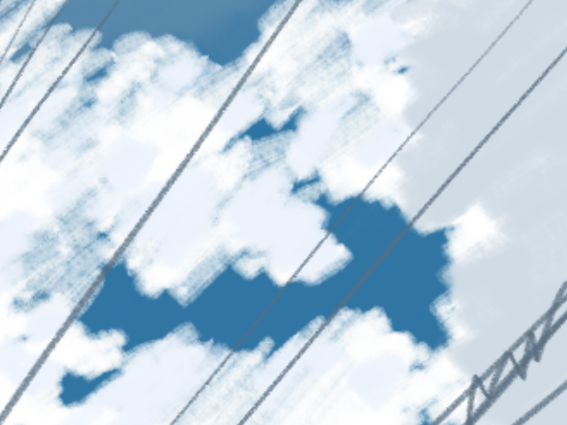

全機能テスト
このページでは、新しく導入したジェネレーターの機能をすべて試します。
1. テキスト装飾
- 太字 と 斜体
取り消し線インラインコード
2. チェックボックス
- Rust製静的サイトジェネレーターの自作
- KaTeX による数式表示の導入
- 記事投稿の完全自動化（GitHub Actions）
- Rustを学ぶ
- サイトを作る
- 世界に公開する
3. コード
4. テーブル (表)
| 言語 | 好き度 |
|---|---|
| Rust | ⭐⭐⭐ |
| C++ | ⭐⭐ |
| Javascript | ⭐ |
5. 引用と脚注
鶏口となるも牛後となるなかれ1
1
大きな組織の末端になるより、小さな組織のトップになる方が良いという意味のことわざ。
6. 数式 (KaTeX)
インライン数式: $E = mc^2$
ブロック数式:
$$ \int_{0}^{\infty} e^{-x^2} dx = \frac{\sqrt{\pi}}{2} $$
7. 画像とリンク
画像を表示します:

外部リンクのテスト: Github
テストは以上です